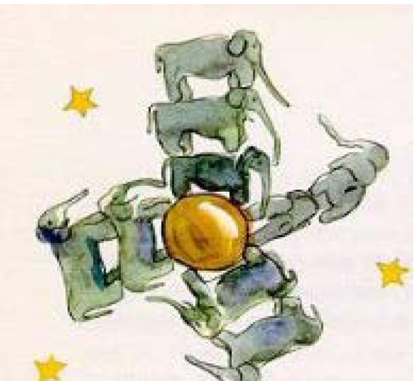
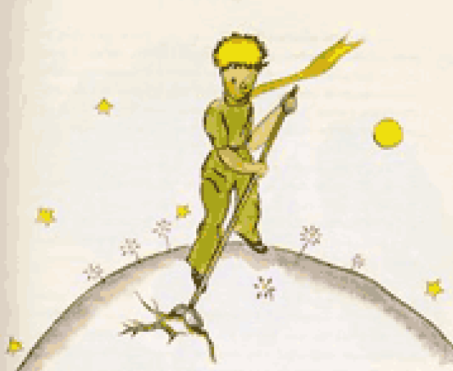
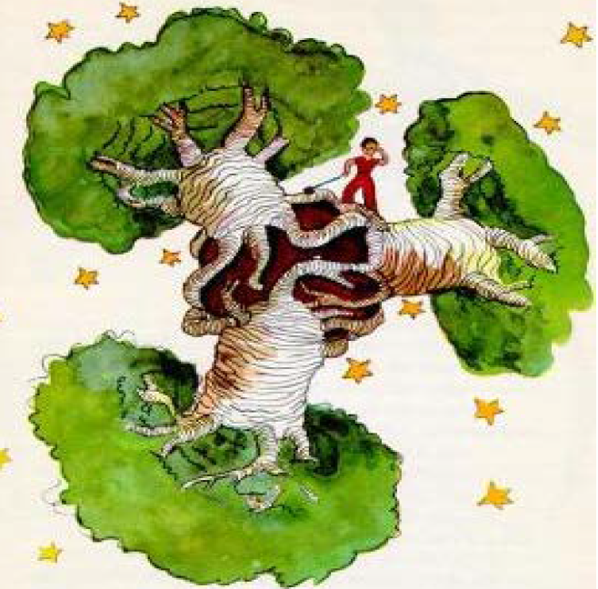

Capítulo 5
Cada día, lentamente y al azar de las reflexiones, aprendía algo nuevo sobre el planeta, sobre la partida y sobre el viaje del principito. Fue así como, al tercer día, conocí el drama de los baobabs.
Fue también por el cordero y preocupado por una profunda duda, cuando el principito me preguntó:
–¿Es verdad que los corderos se comen los arbustos?
–Sí, es cierto.
–¡Ah, qué contesto estoy!
No comprendí qué importancia tenía para él que los corderos se comieran los arbustos. Pero el principito añadió:
–Entonces se comen también los Baobabs.
Le hice comprender que los baobabs no son arbustos, sino árboles tan grandes como iglesias que incluso llevando todo un rebaño de elefantes, no lograría acabar con un solo baobab.
Esto del rebaño de elefantes hizo reír mucho al principito.
–Habría que ponerlos unos sobre otros…
Descripción de imágen: Se observan a varios elefantes apilados, uno encima del otro, en distintas posiciones rodeando y ocupando la totalidad del pequeño planeta del Principito.
Y luego añadió juiciosamente:
–Los baobabs comienzan por ser muy pequeñitos.–Es cierto. Pero… ¿por qué quieres que tus corderos se coman a los baobabs?
Me contestó: "¡Vamos!" como si fuera algo evidente.
Me fue necesario un gran esfuerzo para comprender el problema:
En el planeta del principito había, como en todos los planetas, hierbas buenas y hierbas malas y, por lo tanto, semillas de unas y otras. De las buenas semillas salían buenas hierbas y de las semillas malas, malas hierbas. Las semillas duermen en el secreto de la tierra durante un tiempo, hasta que, un buen día, una de ellas despierta en una encantadora ramita que mira hacia el sol. Si se trata de una ramita de rábano o de rosal, se puede dejar que crezca como quiera; en cambio, si fuera una mala hierba, es preciso arrancarla inmediatamente. El suelo del planeta del principito estaba infestado de semillas de baobabs que si no se arrancan acabando de surgir y en cuanto se les reconoce, pueden cubrir todo el planeta, perforarlo con sus raíces y, si el planeta es muy pequeño y los baobabs son muchos, lo hacen estallar.
"Es una cuestión de disciplina”, me dijo más tarde el principito. “Después de que uno termina su baño matinal, hay también que limpiar la casa, es decir, acicalar cuidadosamente al planeta. Hay que arrancar los baobabs en cuanto se les distingue de los rosales pues se parecen mucho cuando son pequeñitos. Es fácil aunque fastidioso”.
Descripción de imágen: Se observa al Principito parado frente a una yerba mala, sacándola con una pala.
El principito aconsejó que me propusiera a realizar un hermoso dibujo para que los niños de mi tierra comprendieran bien estas ideas. "Si alguna vez viajan —me decía— esto podrá servirles mucho. A veces no hay inconveniente en dejar para un poco más tarde el trabajo; pero tratándose de baobabs, el retraso es siempre fatal. Yo he conocido un planeta, habitado por un perezoso que descuidó tres arbustos…"
Siguiendo las indicaciones del principito, realicé el dibujo. No me gusta adoptar el papel de moralista pero como el peligro de los baobabs es tan desconocido y el riesgo que puede correr quien llegue a perderse en un asteroide es tan grande, no dudo en hacer una excepción y exclamar: "¡Niños, atención a los baobabs!" Y, sólo con el fin de advertir a mis amigos de los peligros a los que se exponen desde hace tiempo sin saberlo, es por lo que trabajé con ahínco en este dibujo. La lección que con él se puede dar, vale la pena.
Es muy posible que alguien se pregunte por qué no realicé otros dibujos tan admirables como el de los baobabs. La respuesta es muy sencilla: cuando dibujé los baobabs estaba animado por un sentimiento de urgencia.
Descripción de imágen: Este dibujo es más colorido y complejo que los otros. Un niño vestido de rojo se encuentra parado sobre su pequeño mundo redondo, en el medio de tres enormes e invasivos baobabs.